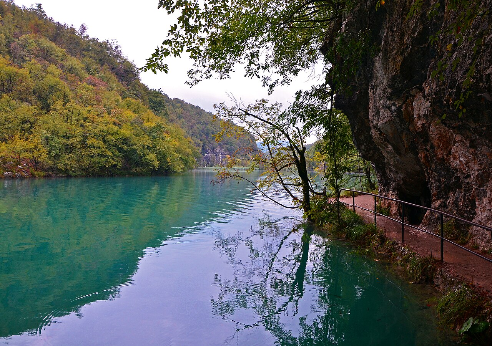

두브로브니크 코토르
확인- 수단
- 버스 · 국제 버스(Globtour·Blue Line 등)
- 소요
- 약 2시간 30분
- 환승
- 직행
2~3시간. 여름 국경 대기가 길면 4시간까지 걸립니다. 여권 필요.
공항 도시에서 첫 숙박지까지의 이동입니다.
발칸 · 루마니아·불가리아
Montenegro – Albania – N. Macedonia – Bulgaria – Romania
발칸을 이미 다녀온 사람들이 두 번째로 가는 동쪽 발칸. 국내 패키지(후기 64건)와 같은 다섯 나라.


몬테네그로 코토르에서 시작해 알바니아 티라나, 북마케도니아 오흐리드·스코페, 불가리아 소피아·벨리코터르노보를 거쳐 루마니아 부쿠레슈티에서 끝냅니다. 참좋은여행 발칸 동북부 5개국 10일 상품과 같은 나라 구성입니다.


지도: © OpenStreetMap 기여자
현지 10박 11일 · 코토르 2박 → 티라나 1박 → 오흐리드 2박 → 스코페 1박 → 소피아 2박 → 벨리코터르노보 1박 → 부쿠레슈티 1박
도착 인천 → 두브로브니크 공항 → 코토르 (버스 약 2시간 30분). 도착일은 숙소 주변 위주로 가볍게.
바다의 문 → 성 트리폰 대성당 → 고양이 광장 → 성 요한 요새(계단 1,350개) 전망.
요새는 아침 일찍 오르면 그늘이 있어 덜 덥습니다.
숙박: 코토르
버스 약 25분 → 페라스트 → 배로 바위 위의 성모섬 → 리산 로마 모자이크, 또는 만을 도는 보트 투어.
숙박: 코토르
이동 코토르 → 티라나 · 버스 약 5시간 30분 일반
스칸데르베그 광장 → 에템 베이 모스크 → 벙크아트 2 → 블로쿠 카페 지구 → 티라나 피라미드.
숙박: 티라나
이동 티라나 → 오흐리드 · 버스 약 2시간 50분 확인
성 소피아 성당 → 고대 극장 → 사무일 요새 → 카네오의 성 요한 교회 일몰 → 호반 판잣길.
숙박: 오흐리드
배(여름) 또는 버스로 호수 남쪽 성 나움 수도원 → 수원지 나룻배 → 뼈의 만 수상 박물관.
호수 수영은 6~9월이 좋습니다.
숙박: 오흐리드
이동 오흐리드 → 스코페 · 버스 약 3시간 15분 일반
마케도니아 광장 → 석교 → 옛 장터(차르시야) → 칼레 요새 → 마더 테레사 기념관.
숙박: 스코페
이동 스코페 → 소피아 · 버스 약 5시간 확인
알렉산드르 네프스키 대성당 → 성 소피아 교회 → 러시아 교회 → 세르디카 로마 유적 → 바냐 바시 모스크·광천수 샘 → 비토샤 대로.
숙박: 소피아
투어 또는 버스로 릴라 수도원(유네스코, 편도 약 2시간) → 보야나 교회와 묶는 일정이 일반적.
대중교통 직행은 하루 1편 수준이라 투어·셔틀이 편합니다.
숙박: 소피아
이동 소피아 → 벨리코터르노보 · 버스 약 3시간 20분 확인
차레베츠 요새 → 사모보드스카 장인 거리 → 구르코 거리 → 아센 왕조 기념비 전망.
요새의 "소리와 빛" 쇼는 단체 예약이 있는 날에만 열립니다.
숙박: 벨리코터르노보
이동 벨리코터르노보 → 부쿠레슈티 · 버스 약 5시간 15분 확인
립스카니 구시가지 → 스타브로폴레오스 수도원 → 카루 쿠 베레 → 칼레아 빅토리에이 → 루마니아 아테네움.
숙박: 부쿠레슈티
오전에 못 본 곳을 둘러보고 공항으로 이동합니다. 귀국편은 대부분 다음 날 한국에 도착합니다.
2~3시간. 여름 국경 대기가 길면 4시간까지 걸립니다. 여권 필요.
공항 도시에서 첫 숙박지까지의 이동입니다.
5~6시간(국경 대기 포함).
2시간 20분~3시간. 국경 통과, 여권 필요. 편수가 적어 날짜를 맞춰야 합니다.
3시간~3시간 30분, 하루 여러 편. 여름 주말은 예매 권장.
4시간 20분~5시간 30분.
3시간~3시간 20분.
약 5시간 15분. 기차는 루세에서 갈아타고 편수가 매우 적습니다. 불가리아·루마니아 모두 솅겐이라 육로 국경 심사는 평소 없습니다.
국경 몬테네그로·알바니아·북마케도니아는 비솅겐, 불가리아·루마니아는 솅겐입니다.
이스탄불·프랑크푸르트·뮌헨·비엔나 등에서 1회 경유. 겨울에는 편수가 크게 줄어 2회 경유가 될 수 있습니다.
이스탄불·프랑크푸르트·뮌헨·헬싱키·바르샤바·도하 등에서 1회 경유.
5·6·9월
11~3월
여름 내륙은 덥습니다.
.jpg?width=960)

.jpg?width=960)
단기·중기(4~5박) · 1개국 · 추천 6·9월
작은 수도와 알프스 호수 두 곳. 이동 시간이 가장 짧은 힐링 코스.



중기·장기(7~8박) · 1개국 · 추천 5·6·9월
수도에서 호수 국립공원을 지나 달마티아 해안을 따라 내려가는 크로아티아의 정석.


중기(6~7박) · 2개국 · 추천 5·10월
알프스 호수와 석회암 호수 계단. 두 나라의 "물 풍경"을 일주일에 담는 코스.


중기(5~6박) · 2개국 · 추천 5·10월
성벽 도시 두 곳과 피오르드 같은 만. 아드리아해 남쪽의 일주일.
정보 확인일 2026-11-21